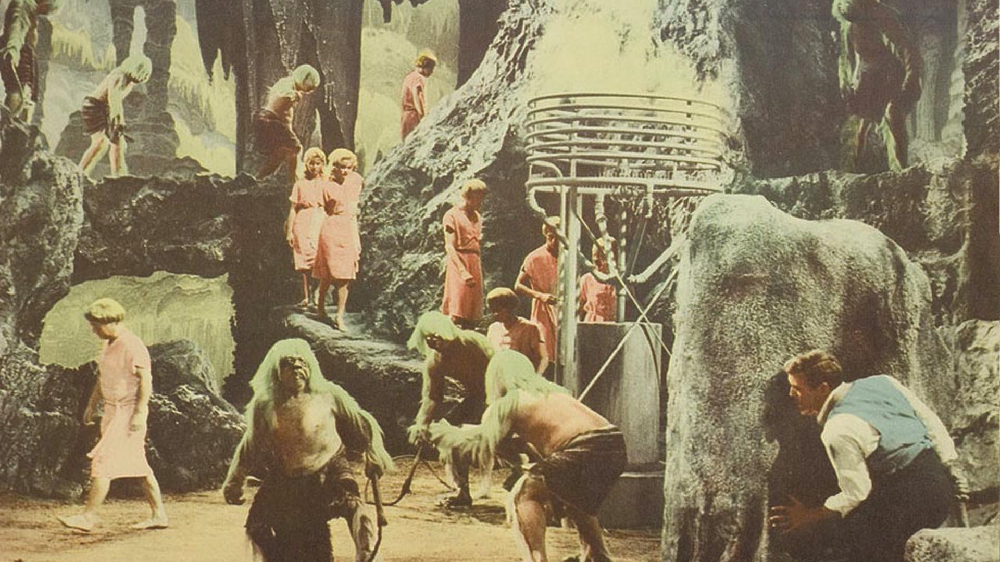

Retro Future Archive
This is an archive of records of dates and time of incidents and events from science fiction literatures and films.
The numbers indicate the amount of time that has been passed between the event and the present day. This is an archive of predictions of people from the past.
Variable Font Test

Time Machine